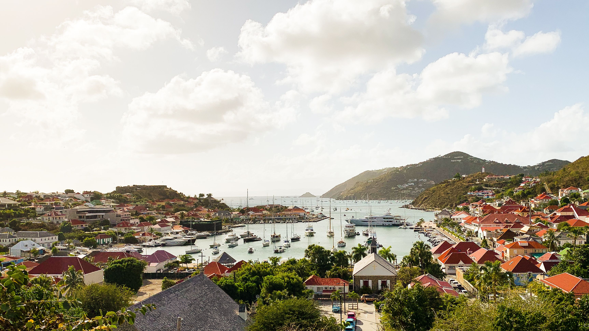
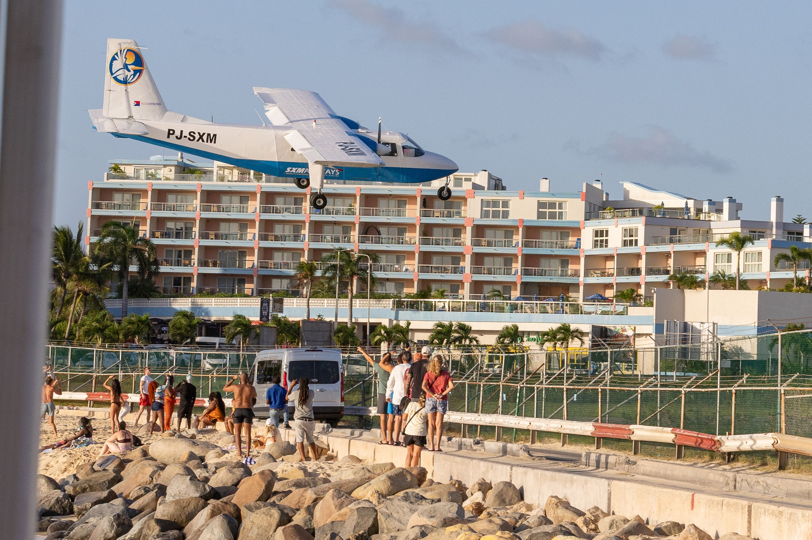
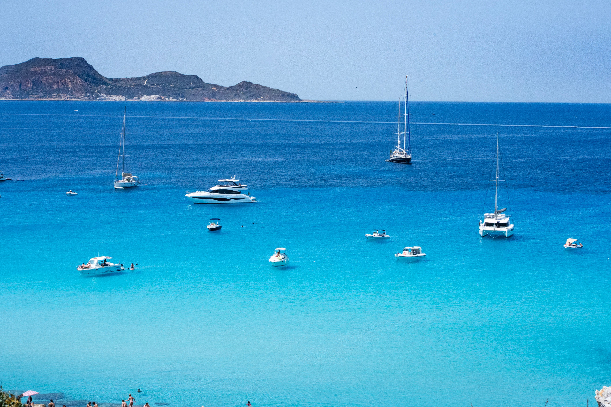
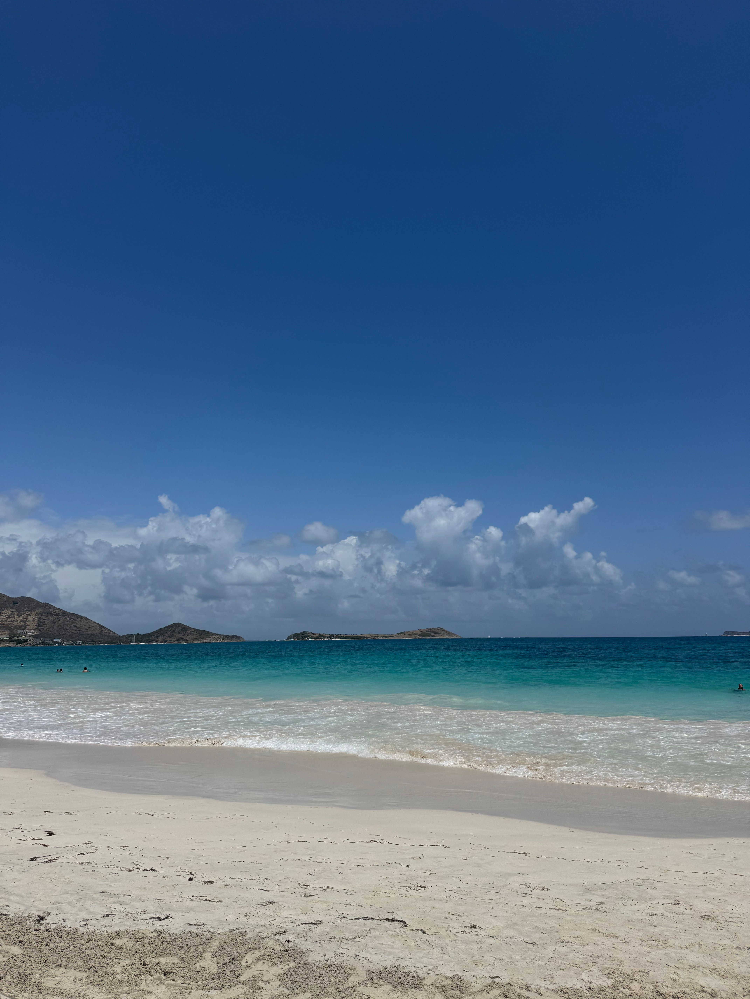

While living in Martinique and island-hopping around the Caribbean, we eventually found ourselves in St Barths — an island we'd heard described as the playground of the rich and famous. We arrived expecting glamour, yachts and luxury. We found all of that, of course, but we also found something else entirely: a beautiful little island that somehow manages to feel both exclusive and completely relaxed at the same time.




At the time, Nicola was living in Martinique, and we had made it our mission to see as many Caribbean islands as possible. Every island felt completely different from the last, but St Barths stood apart immediately.
Officially Saint-Barthélemy, the island is a French overseas collectivity and feels unmistakably French from the moment you arrive. There are chic cafés, boutique shops, elegant villas perched on hillsides and some of the most impressive yachts we have ever seen sitting quietly in the harbour.
Yet despite its reputation, St Barths never felt pretentious. The atmosphere was relaxed, the pace was slow, and the people were incredibly welcoming. It felt like someone had taken a little piece of the Côte d'Azur and dropped it into the middle of the Caribbean Sea.
We spent our time doing what we do best — exploring. We drove around the island, stopped whenever a view caught our eye and simply enjoyed being there. The roads twist and climb dramatically, revealing one extraordinary vista after another, each one somehow more beautiful than the last.
The capital, Gustavia, is one of the prettiest harbour towns in the Caribbean. Luxury boutiques sit beside colourful colonial buildings while enormous yachts bob gently in impossibly blue water.
Some of these boats are less "yacht" and more "floating hotel". We spent a ridiculous amount of time trying to guess who owned them and how many houses you could buy for the price of one anchor.
It's impossible not to people-watch in St Barths. One moment you'll be eating an ice cream; the next, you'll realise the person beside you has probably arrived by helicopter.
And yet, somehow, it all works. The glamour adds to the atmosphere rather than detracting from it.
St Barths is small — only around 25 square kilometres — but every corner feels postcard-perfect. Whitewashed buildings, bougainvillea spilling over walls, quiet coves and hills that tumble down towards the sea.
There is an ease to life here that is difficult to explain. Perhaps it's the French influence. Perhaps it's the Caribbean sunshine. More likely, it's a combination of both.
We spent hours simply wandering around Gustavia before heading back onto the roads to see what else we could discover. Every turn seemed to reveal another beach, another viewpoint or another reminder that this tiny island has somehow become one of the most desirable places on Earth.
And while we certainly weren't staying in one of the multimillion-euro villas perched on the hillsides, for a day or two we got to experience the island exactly as everyone else does — slowly, under a cloudless Caribbean sky.
One of the prettiest harbours anywhere in the Caribbean. Elegant, colourful and filled with some of the most extraordinary yachts we have ever seen.
Hiring a car and driving without a plan remains our favourite way to travel. St Barths rewards curiosity with breathtaking views around every corner.
There's nowhere else quite like it. It feels both Caribbean and European at the same time, somehow combining the best of both worlds.
The island's hills provide endless panoramic views over turquoise water, hidden coves and neighbouring islands in the distance.
Looking back, our Caribbean island-hopping adventure remains one of the greatest periods of our lives. St Barths was one of its highlights — elegant, beautiful and utterly unforgettable.
St Barths doesn't really have standalone land tours — most visitors either fly in independently via St Martin or see it as one stop on a multi-island Caribbean itinerary. If you'd rather have it built into a wider trip, TourRadar's "Eastern Caribbean with St Barths" itinerary calls at Gustavia along with St Martin, Anguilla, St Kitts, Antigua and Barbados.
Disclosure: This is an affiliate link. If you book through it we may earn a small commission at no extra cost to you. This is a luxury multi-island itinerary rather than a budget option — worth knowing before you click through.
St Barths runs heavily on private villas, but there are hotel options too if you'd rather book something straightforward. Klook has St Barths stays available to browse.
Disclosure: This is an affiliate link. If you book through it we may earn a small commission at no extra cost to you.
Common questions
What to pack for St Barths
Self-drive exploring, harbourside strolling and plenty of sun — these are the things we'd bring without hesitation.
Stay connected across St Barths and St Martin without roaming charges — handy for maps and ferry timings.
View on Amazon →The Caribbean sun is intense, especially on open hillside roads with little shade. High SPF is non-negotiable.
View on Amazon →For wandering Gustavia's harbourside streets and any hillside viewpoints. Flip flops alone won't cut it on the steeper roads.
View on Amazon →Long days spent driving, exploring and photographing the harbour will drain your phone fast.
View on Amazon →St Barths uses European-style two-pin plugs — a universal adaptor covers all your devices.
View on Amazon →Between the glare off the harbour water and the bright hillside roads, a decent pair earns its keep here.
View on Amazon →Disclosure: These are Amazon affiliate links. If you buy through them we may earn a small commission at no extra cost to you.
St Barths was part of a longer Caribbean chapter — read our other island guides below.
A year living on the Island of Flowers — sun, sea, tropical storms and the friendliest people you'll ever meet.
Read the Martinique guide →Jazz Festival, the Gros Islet street party, rum punch at Rodney Bay and the iconic Pitons.
Read the St Lucia guide →The Dutch side of the island — and the easiest gateway across to St Barths.
Read the Sint Maarten guide →Go for the scenery, stay for the atmosphere and spend at least an hour admiring yachts you'll never be able to afford. St Barths is proof that luxury and laid-back island life can coexist perfectly.
Affiliate disclosure: if you book through our links we may earn a small commission at no cost to you. We only recommend experiences we've done ourselves.